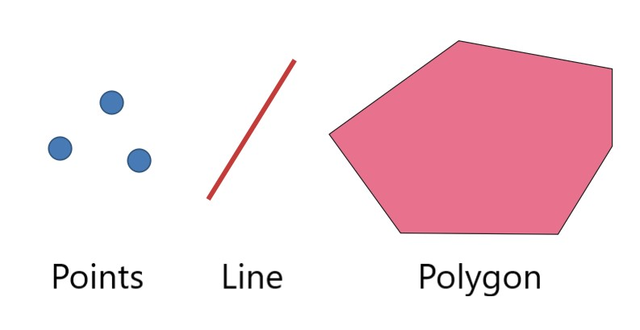
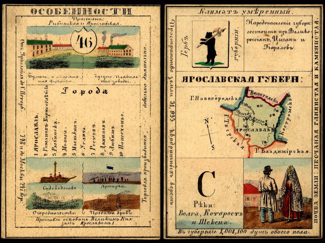
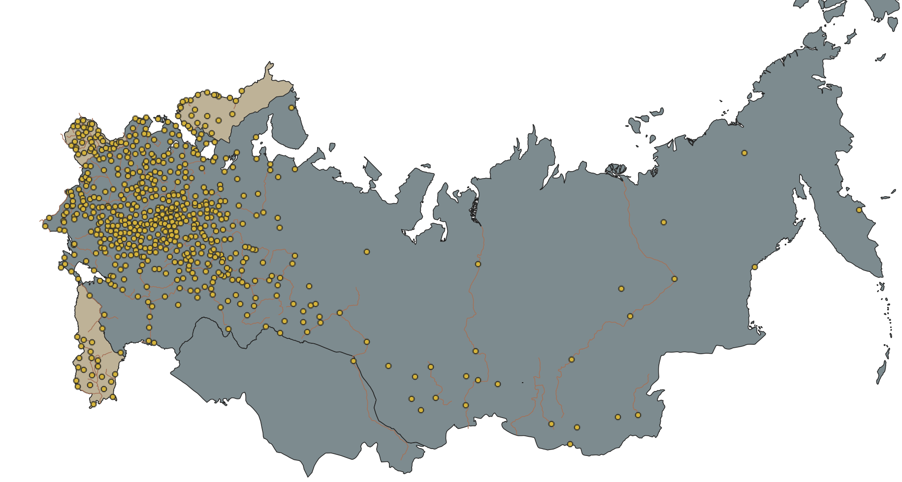
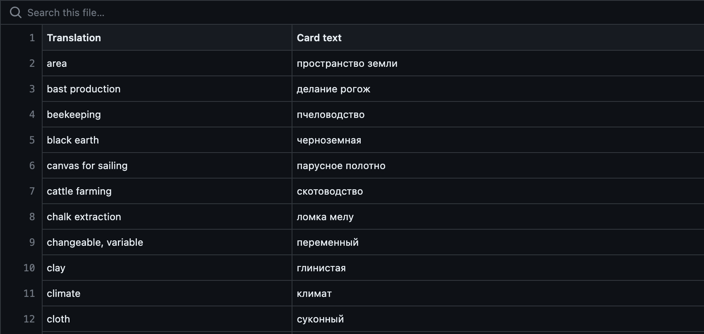
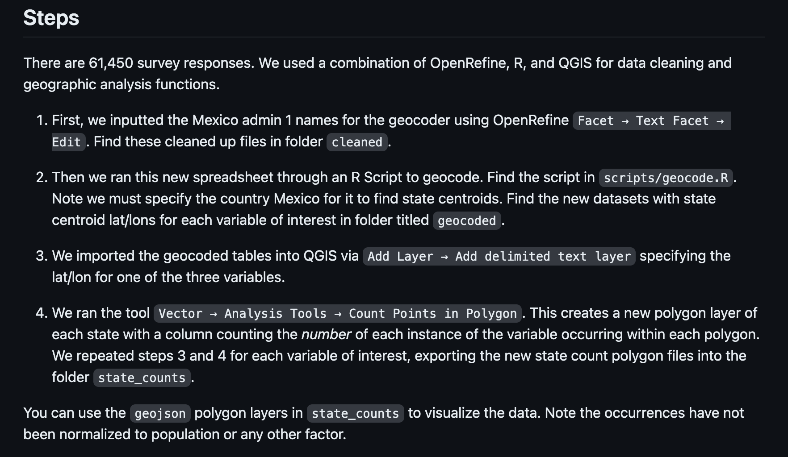
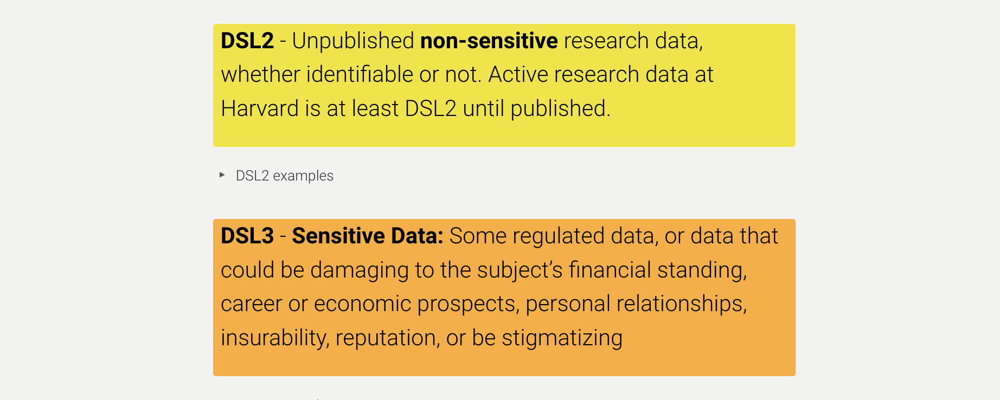
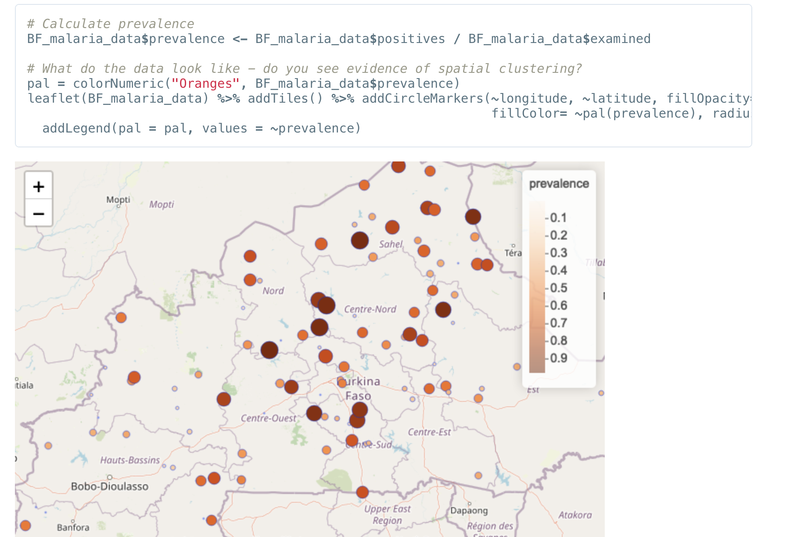
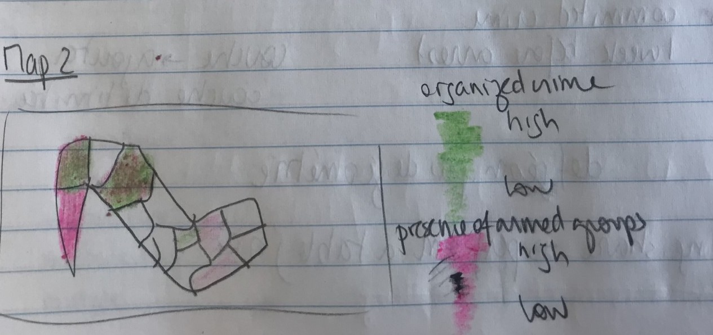
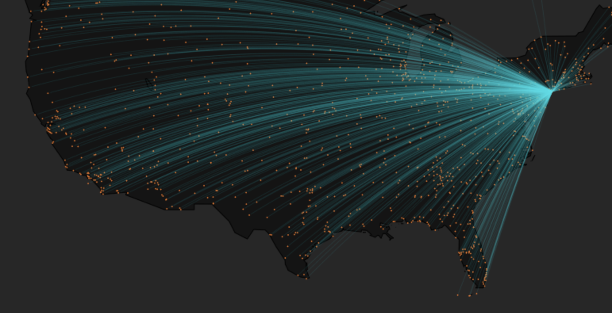
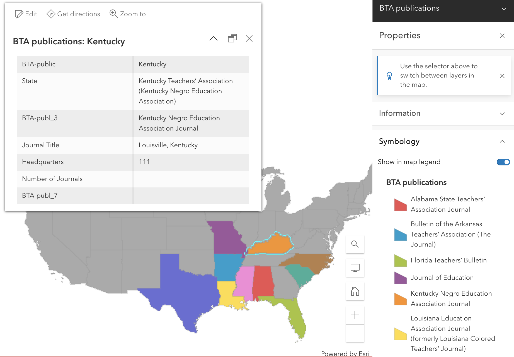

GIS Outreach With the Harvard Map Collection


 GIS vector dataset showing historic old growth trees in Washington State
loaded into QGIS, a map making software.
GIS vector dataset showing historic old growth trees in Washington State
loaded into QGIS, a map making software.
 Historic old growth trees in Washington State
dataset in QGIS table view.
Historic old growth trees in Washington State
dataset in QGIS table view.

 Georeferenced map of Poland from 1919.
Georeferenced map of Poland from 1919.

 Example historical GIS data derived from library archives.

Office of Scholarly Communications blog about open access .
Blog benefits
- Example student projects, such as Paige Lee’s
- Make partnerships visible, for instance collaborations with other librarians
 Helping model project documentation in the Harvard Kennedy School Masters of Public Policy students.
 Examples of Harvard Data Security Levels .
 Spatial methods for public health data, project data via code.harvard.edu .
 Map sketch by HKS Public Policy student Justine Baillairt.
 Scoping map design for publication, based on students’ style goals - flight maps .
Homepage of the Black Teacher Archive .
 Exploration resulting from a 45 minute consultation.